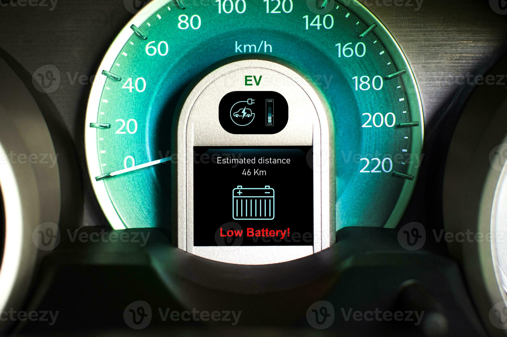
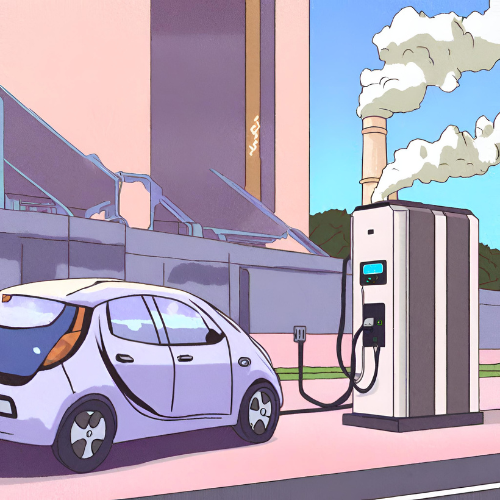
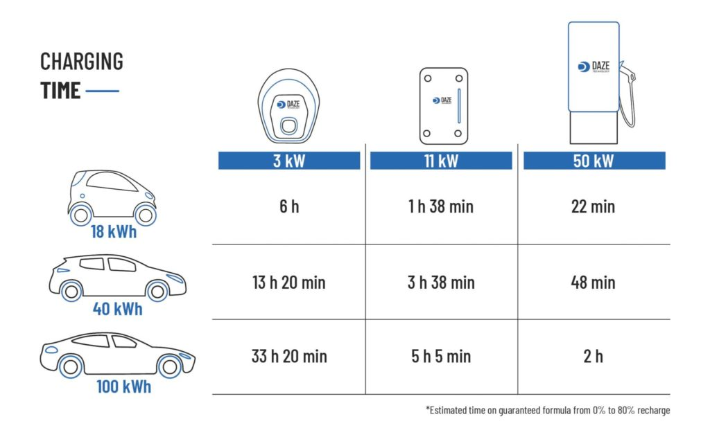
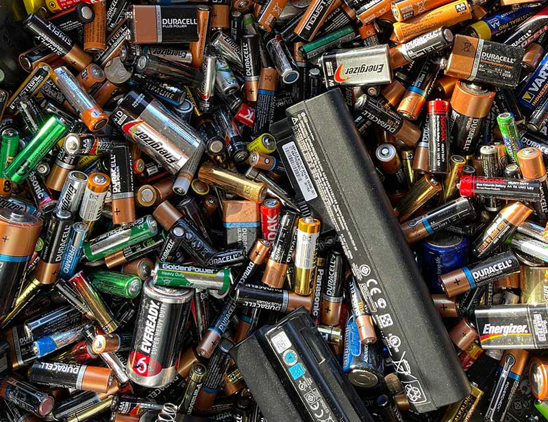
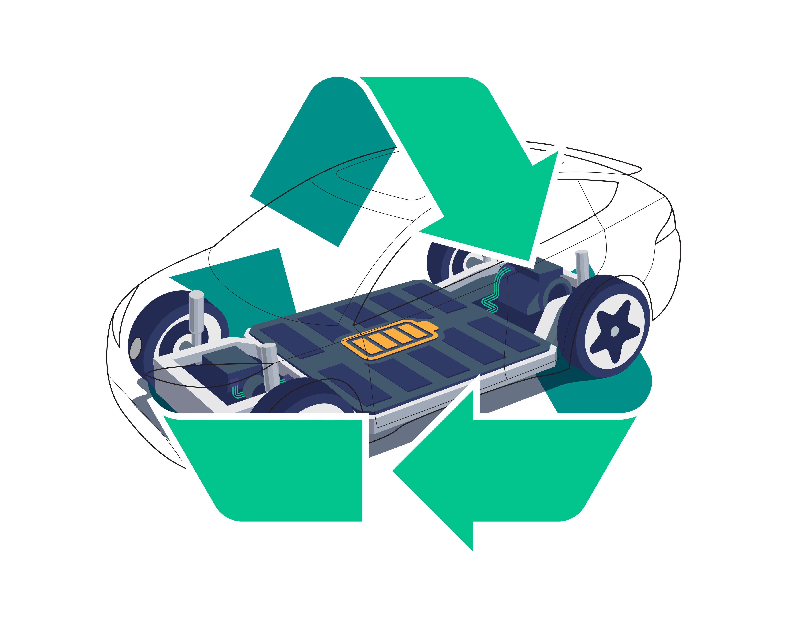

Electric vehicles (EVs) are a crucial part of our journey towards a sustainable and eco-friendly future. By choosing electric vehicles, we contribute to reducing greenhouse gas emissions and decreasing our dependence on fossil fuels.
Make a positive impact on the environment and your wallet by choosing electric vehicles. Embrace the future of transportation and be a part of the electric revolution!
This Website is dedicated to identifying and solving problems faced by Electric vehicles. We believe that for a sustainable future where we use as much clean energy as possible, the advent of electric vehicles becomes vital and in that spirit we have made this website. We as students can only do so much for this cause but we are taking a first step by creating this website. One of the major problems faced by Electric vehicles are lack of charging stations and not being able to find charging spots at the right time. If you go to the maps section of this page you can search for nearby charging station using your current location or by manually entering the city you are in or any landmark near you.
The range of an EV on huge concern for users. While many companies have been improving the ranges with advancements in battery technology it is still one of the negatives of EVs. This causes a phenomenon called range anxiety due to which people avoid buying EVs.
The availability and accessibility of charging stations can be a major obstacle, particularly in rural or less developed areas. Charging infrastructure needs to expand to make EVs more practical for all consumers.
Charging an electric vehicle takes longer than filling up a petrol, diesel or CNG vehicle. There is a urgent need for new advanced charging technology that can reduce the charging time.
Electric vehicles tend to be more expensive compared to normal vehicles of same level.
The production of lithium-ion batteries for EVs has environmental impacts, including resource extraction and energy-intensive manufacturing. Efforts are being made to improve the sustainability of battery production.
Proper disposal and recycling of EV batteries are important to minimize environmental impact. Developing recycling processes and infrastructure is an ongoing challenge.
Search by your location
Search by City/Landmark
Email: jay.bharti2804@gmail.com
Email: xxxxx@gmail.com
Email: xxxxxx@gmail.com